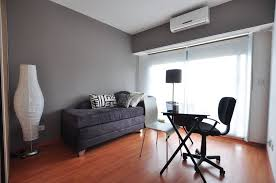

Sobre Mi
"Considero que la buena gestión de las emociones es clave para poder ser feliz"
Soy Psicologa, graduada de la UBA en el año 2007 y actualmente trabajo en el Instituto Rojas Estapé. Tras terminar la carrera opté por colaborar en un proyecto solidario en Camboya que acabaría cambiando mi vida en muchos aspectos. Allí trabajé en la Fundación de Somaly Mam, AFESIP, ayudando a niñas de los prostíbulos que habían sido vendidas a redes de tráfico sexual desde pequeñas. Entré en los burdeles para entender mejor la historia de esas jóvenes y desde entonces colaboro con Somaly para ayudar en la prevención del tráfico sexual.
Certificados
Servicios
Diagnóstico
El Diagnostico Psicológico es un proceso de investigación especifico y pertinente al perfil y quehacer del profesional Psicólogo.
Psicología
La psicología es la ciencia que estudia la conducta humana y los procesos mentales.
Terapia Individual
La terapia individual es un espacio y una oportunidad para pensar, evaluar y replantear temas que generan sufrimiento y liberar cargas y crecer personalmente.
Terapia de pareja
La terapia de pareja es un tipo de consulta de psicoterapia destinada a analizar y tratar los conflictos surgidos en el seno de una relación amorosa.
Psicotécnica
Consisten en un examen tipo test y los niveles se comparan con un estándar por lo que, normalmente, se debe lograr cierta puntuación para pasarlas.
Test vocacional
El test vocacional es un recurso que se emplea en el proceso de orientación vocacional para ayudar a los estudiantes a elegir una carrera.
Beneficios de hacer terapia
SALUD MENTAL
La salud mental es un estado de bienestar mental que permite a las personas hacer frente a los momentos de estrés de la vida, desarrollar todas sus habilidadesy trabajar adecuadamente.
FELICIDAD
la felicidad es un estado emocional positivo que los individuos alcanzan cuando han satisfecho sus deseos y cumplido sus objetivos y viene medida.
RELACIONES SANAS
En una relación saludable ambos miembros de la pareja se sienten valorados y respetados, y se respetan sus límites.
Que dicen mis pacientes
"Hablar de la salud mental sigue siendo tabú. En la vida enfrentamos momentos duros, y un psicólogo nos ayuda a mantener la perspectiva y a enfrentar pensamientos negativos."
Eva Rodriguez"Me ayudó a entender que mi ansiedad tenía raíces en la necesidad de control y baja autoestima. La terapia me dio herramientas para cuidarme mejor."
Julieta Monte"Aprendí a identificar pensamientos dañinos, reducir la angustia, canalizar mis emociones y ajustar mis expectativas. Aunque temía el estigma, soy optimista y creo que con el tiempo el miedo a hablar sobre salud mental disminuirá."
Jorge MartinezPreguntas frecuentes
Nuestro consultorio
Como llegar
Floresta Norte, Bs. As., Argentina Palermo, zona Botánico Lineas: 7, 56, 34, 101 Subte: B y CHorario
De lunes a viernes de 9:00 hs a 18:00 hs Sabados de 9:00 hs a 14:00 hsEnvía un mensaje para solicitar tu primera consulta
Si tienes duda o comentarió, puedes escribirnos aqui mismo.